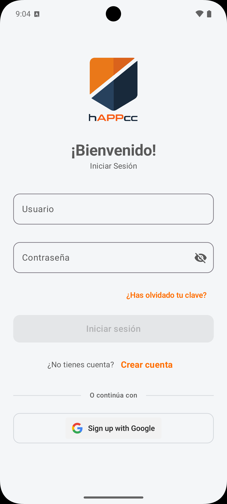
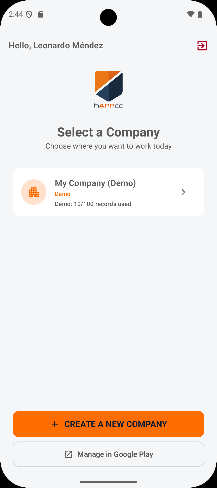
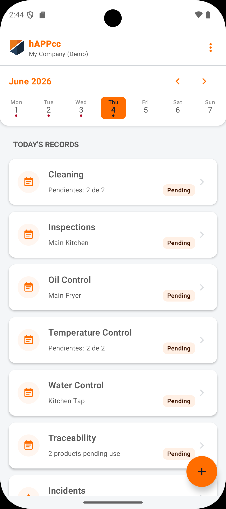
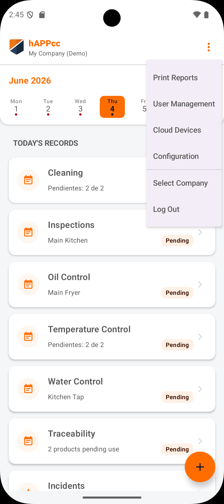
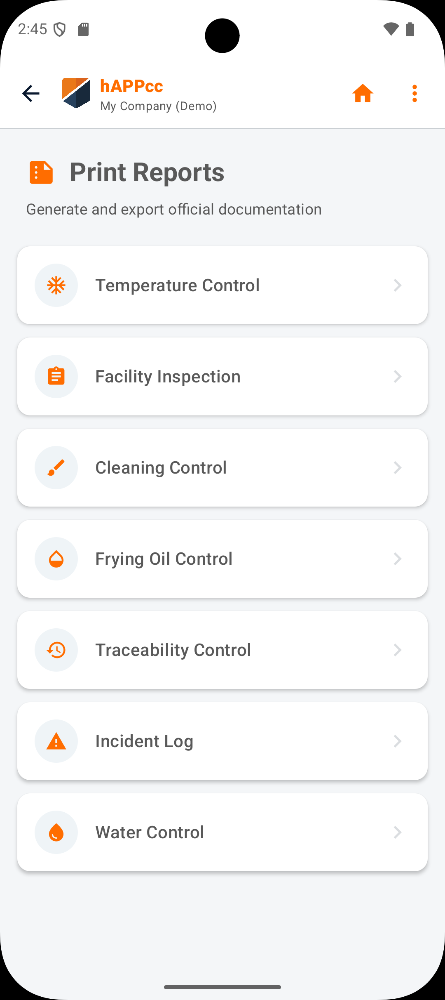
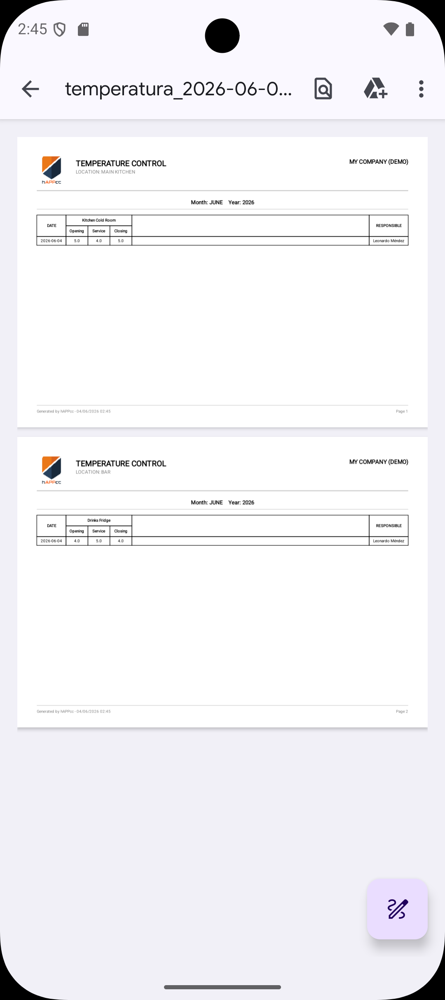

De problema operativo a SaaS vendible
Traduzco procesos reales de pymes en flujos claros, precios asumibles y producto usable desde el primer día.
Emprendedor digital, economista y desarrollador Android en Madrid. Como fundador de Leonix construyo hAppcc, una app para digitalizar registros APPCC en hostelería con Kotlin, Room y Koin.

Soy economista de formación y hoy estoy centrado en crear software para pequeñas empresas. Antes pasé por el sector financiero y por la gestión diaria de empresas retail, así que cuando pienso en un producto no empiezo por la tecnología: empiezo por el problema real que le quita tiempo, control o dinero a una pyme.
Mi foco actual es hAppcc, una app Android para digitalizar registros APPCC que muchas cocinas todavía resuelven con papel, hojas sueltas o procesos demasiado manuales. La construyo con Kotlin, Room y Koin, priorizando uso sencillo, persistencia local y una base técnica mantenible.
Me gusta estar cerca de todo el proceso: hablar con usuarios, decidir qué merece la pena construir, programarlo, probarlo y explicar el producto de forma clara. Leonix nace de esa mezcla de negocio, tecnología y ejecución comercial.
Leonardo Manuel Méndez
Madrid, España
www.leonix.es
+34 638 869 158
leonardommendez@gmail.com
Desarrollo software SaaS para pymes con una idea clara: tecnología útil, precios accesibles y adopción sencilla. Leonix nace para resolver problemas reales de seguridad alimentaria, control de presencia y gestión de inventarios.
Actualmente el foco principal es hAppcc, una aplicación para digitalizar registros APPCC con modo local, demo gratuita y una base Android nativa construida con Kotlin, Room y Koin. En paralelo, estoy preparando CronoSystem y StockEntry como nuevas líneas de producto.
Base en análisis financiero, gestión y lectura económica del negocio. Esta formación me ayuda a evaluar costes, márgenes, procesos y prioridades antes de convertir una idea en producto.
Desarrollo, implementación y mantenimiento de aplicaciones multiplataforma, con atención a bases de datos, interfaces, calidad, documentación y despliegue de soluciones orientadas a uso real.
Lo que aporto: visión de negocio, criterio financiero, gestión de producto, desarrollo de software y ejecución comercial para llevar una idea desde el problema hasta una solución vendible.
Traduzco procesos reales de pymes en flujos claros, precios asumibles y producto usable desde el primer día.
Construyo aplicaciones Android con persistencia local, dependencias desacopladas y foco en estabilidad, coste y mantenimiento.
He gestionado negocios de retail y alimentación, equipos y logística; por eso diseño software pegado a la realidad diaria del usuario.
Leonix es mi empresa de software. Su misión es democratizar tecnología para pequeñas empresas: herramientas potentes, fáciles de usar y con costes razonables para resolver tareas operativas que hoy siguen consumiendo tiempo, papel y control manual.
APPCC, control horario y stock con IA. Productos pensados para negocios que necesitan digitalizarse sin contratar una implantación pesada.
Visitar LeonixDiseño la propuesta de valor, hablo con usuarios, priorizo funcionalidades, desarrollo la base técnica y preparo la comunicación comercial. Leonix no es solo un escaparate de código: es una empresa en construcción, con productos, clientes objetivo y decisiones de negocio reales.

hAppcc ayuda a bares, restaurantes y pequeñas cocinas a sustituir registros APPCC manuales por una app Android clara, económica y preparada para el trabajo diario. El objetivo no es añadir complejidad: es hacer más fácil mantener orden documental ante inspecciones.
La app cubre acceso, selección de empresa, registros diarios, opciones de gestión y generación de informes para mantener la documentación APPCC preparada.






Aplicación Android para digitalizar registros APPCC con demo gratuita y modo local pensado para pequeñas empresas de hostelería.

Sistema de control de asistencia para microempresas que necesitan cumplir con el registro de jornada de forma sencilla y sin añadir complejidad al día a día.

Producto para recepción de mercancías que usa inteligencia artificial para leer albaranes, revisar entradas y detectar errores antes de que se conviertan en pérdidas.
¿Quieres probar hAppcc, tienes una pyme o un proceso repetitivo que digitalizar? Hablemos de cómo convertirlo en un producto simple, útil y sostenible.